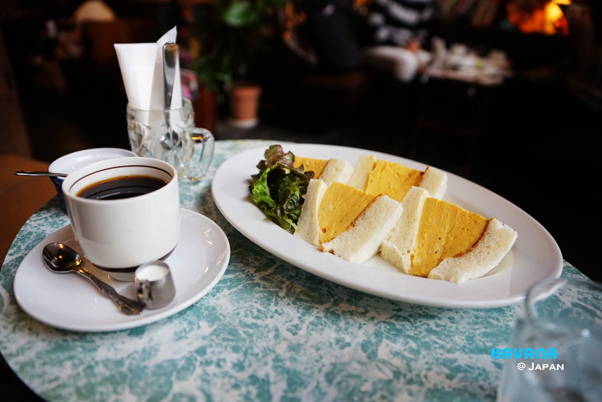

有名的三明治老店
為了一嚐傳說中的玉子三明治，我和朋友D相約在京都時，特地去了「喫茶マドラグ」，沒想到，當天傍晚「喫茶マドラグ」的店門口立了個牌子：「今天的玉子三明治賣光了！」早到一步的D告訴我，她站在店門口，看到許多人真的是衝著這個玉子三明治而來，看到賣光了，有些人不死心，走進去問，得到的答案也是一樣，只好苦著一張臉離開。
終於等到了傳說中的玉子三明治，一端上來，我呆了！這三明治未免太大了！四塊三明治佔滿了橢圓形的大盤子，吐司厚，兩片吐司所夾的玉子燒更厚！我拿起一塊放進嘴裡
好柔軟啊！白吐司入口異常鬆軟，搭配柔嫩的玉子燒，還塗了點芥茉醬，原來就是這份溫柔的感覺，讓老先生的魅力歷久不衰！
官網:https://madrague.info/
| 電話 | 075-365-8666 |
| 地址 | 京都市中京區押小路通西洞院東入北側 |
| 營業時間 | 11:30~22:00 |